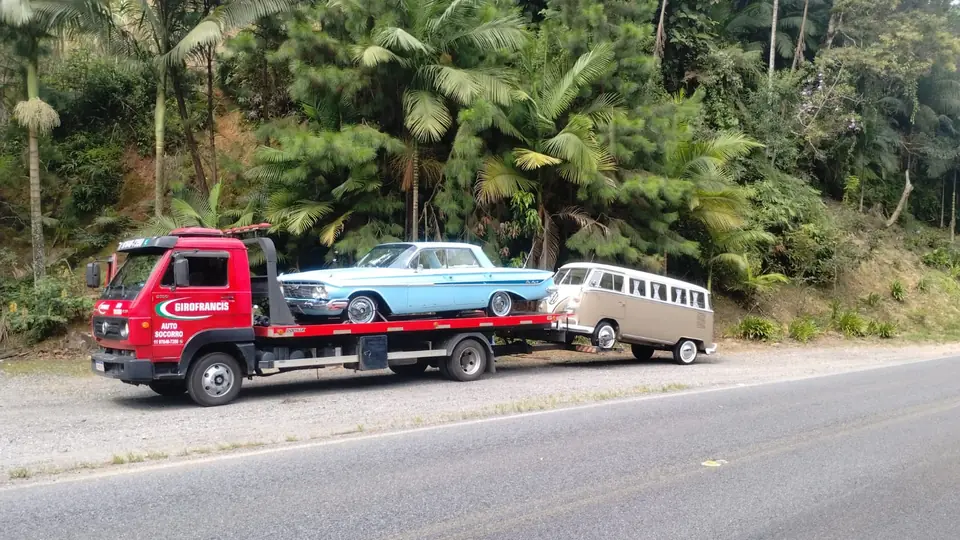
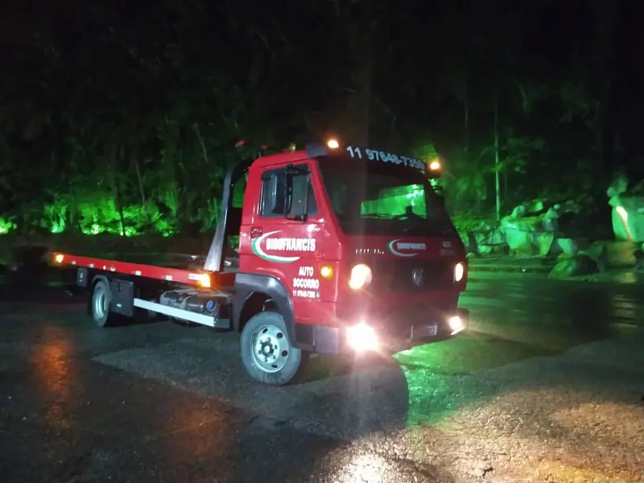
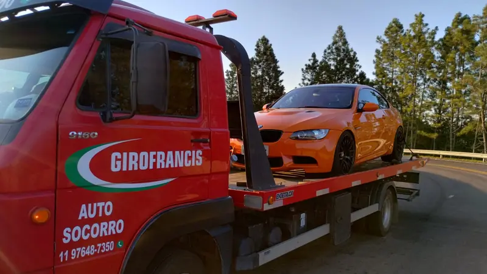
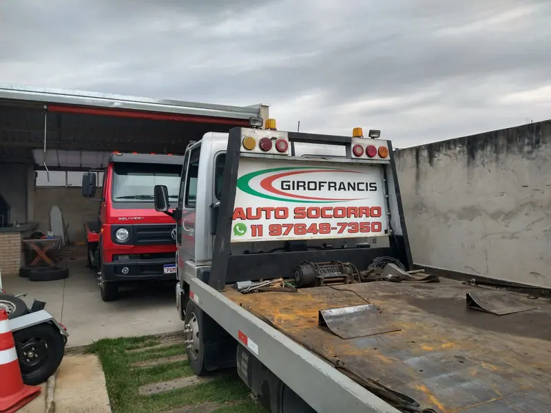
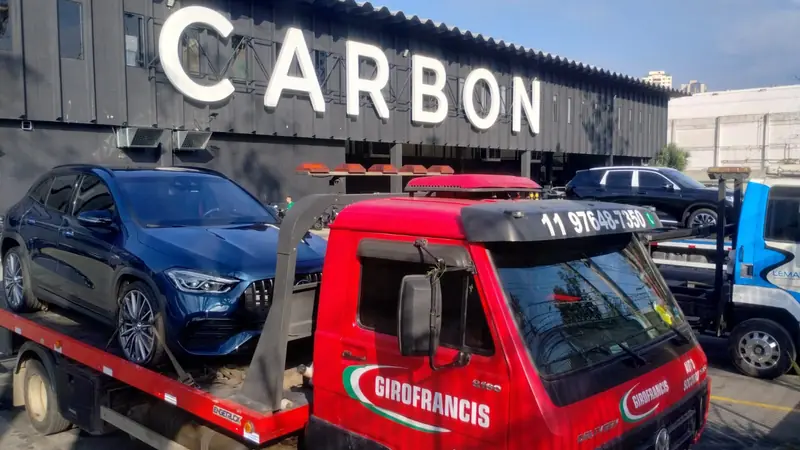
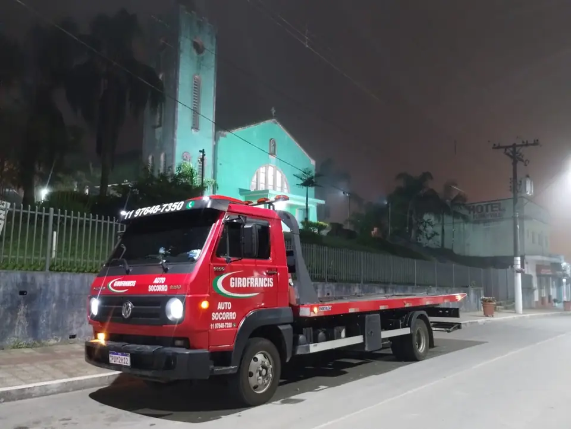

Atendimento 24 horas
Disponibilidade contínua para ocorrências urbanas, rodoviárias e transporte programado.
Guincho 24h em Itu, região e atendimento nacional
Auto socorro imediato para carros, utilitários, caminhões e máquinas. A GiroFrancis atende emergências em Itu, cidades vizinhas e também realiza transportes em todo o Brasil.

Disponibilidade contínua para ocorrências urbanas, rodoviárias e transporte programado.
Orçamento claro, atendimento objetivo e foco em resolver sua urgência sem complicação.
Acionamento ágil para Itu e região, com cobertura ampliada conforme a necessidade do cliente.
Serviços
Estrutura preparada para ocorrências emergenciais, remoções programadas e transporte especializado.

Atendimento para carros, motos, utilitários e veículos com pane mecânica ou elétrica.

Transporte seguro para oficinas, mudanças de pátio, veículos parados por pane e deslocamentos agendados com agilidade.

Logística para equipamentos, estruturas e remoções técnicas com cuidado no carregamento.

Suporte inicial para pane, bateria, travamento e situações urgentes na rua ou estrada.
Cobertura
Atendimento local para Itu, deslocamentos em cidades próximas e transporte para outros estados quando necessário. Ideal para emergências, remoções para oficina, transferências e transporte de longa distância.
Estrutura

Emergência agora?
Se precisa de guincho em Itu, reboque rápido ou socorro 24h, o contato mais rápido é por ligação ou WhatsApp.